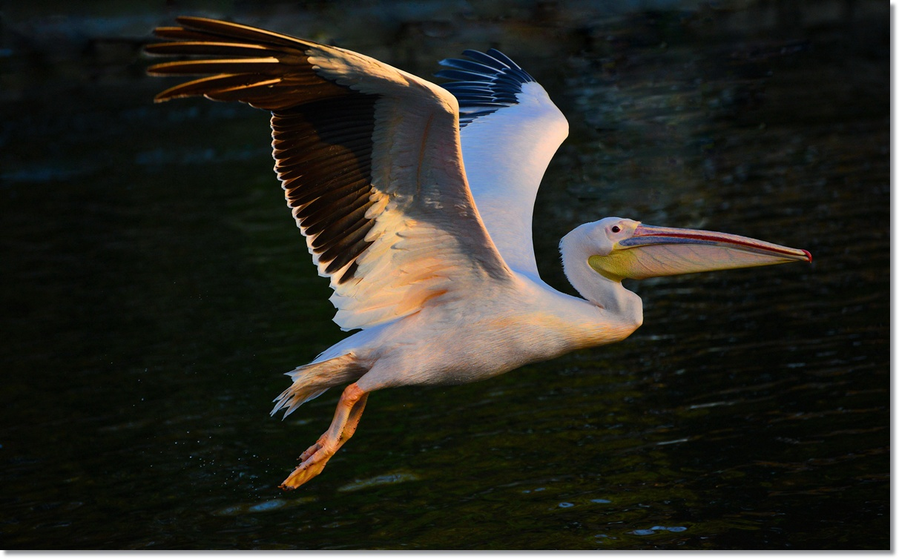
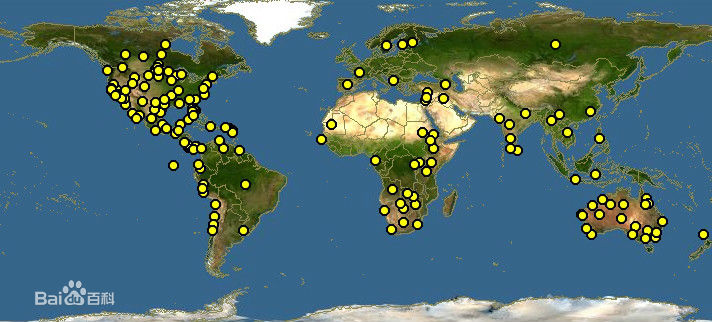
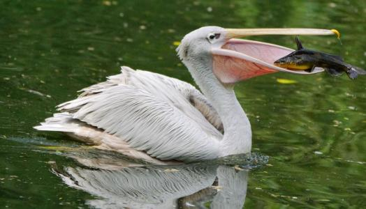
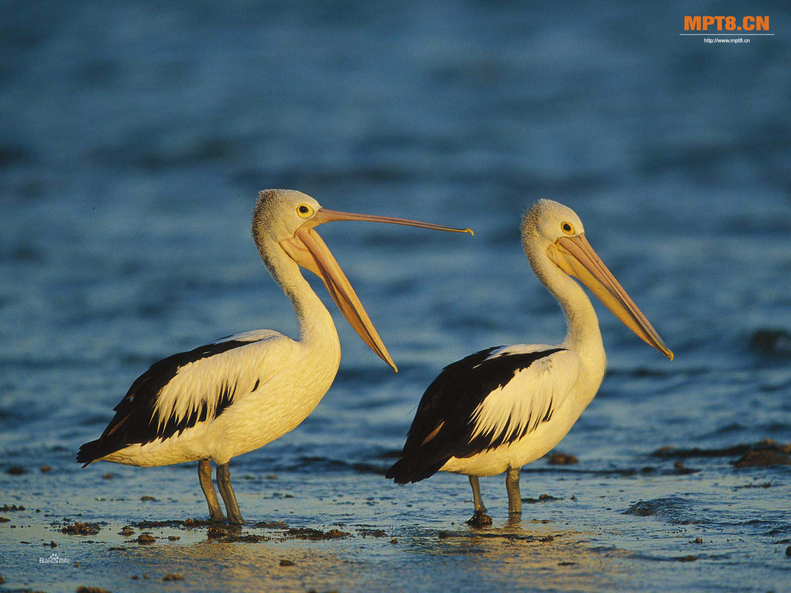

鹈鹕体型粗大，成年鹈鹕体长约1.7米左右，翅展可达3米，它的翅膀强壮有力，能够把庞大的身躯轻易送上天空。体重可达13千克，是现存鸟类中个体最大者之一。嘴形宽大直长，长30多厘米，上嘴尖端朝下弯曲，呈钩状；下嘴分左右二支，其间有一巨大而能扩缩的皮肤喉囊；皮囊是下嘴壳与皮肤相连接形成的，可以自由伸缩。巨大的嘴巴和喉囊使鹈鹕显得头重脚轻。当鹈鹕在地上走路的时候总是摇摇摆摆步履蹒跚。这是因为鹈鹕的大嘴十分碍事。尤其是当它捕到猎物的时候，大嘴和喉囊里装满了海水，使它浮出水面的时候很困难。鼻孔小，而位于嘴基。眼前部裸出。颈长而较细小。翅宽阔，但形不长也不尖；尾短而呈方形；跗蹠短而扁平，前面呈网眼状细鳞。
它的全身长有密而短的羽毛，羽毛为桃红色或浅灰褐色。人们见到鹈鹕浮出水面的时候，总是尾巴先露出水面，然后才是身子和大嘴。而且，鹈鹕一定要把嘴中的海水吐出来，才能从水面起飞。
广布全球温暖水域，大多分布在亚洲，欧洲，非洲，以及澳大利亚。鹈鹕分布于世界许多地区的海岸以及河湖沿岸。这种鸟喜好群居，通常以群为单位，排成一列行动。而交配繁育期间则通常在岛上聚成更大的群（colony）。中国的鹈鹕共有3种，分别为白鹈鹕、斑嘴鹈鹕和卷羽鹈鹕。斑嘴鹈鹕鸟如其名，在它的嘴上布满了蓝色的斑点，头上被覆粉红色的羽冠，上身为灰褐色，下身为白色。而白鹈鹕主要分布在中国新疆、福建一带，它们通体为雪白色。二者均为中国的二级保护动物。
鹈鹕是一种喜爱群居集的鸟类。喜欢成群结队地活动。每当鹈鹕集体捕鱼的时候，在海面上人们可以看到鹈鹕此起彼伏的从空中跳水的壮观场面。
鹈鹕在野外常成群生活，每天除了游泳外，大部分时间都是在岸上晒晒太阳或耐心的梳洗羽毛。鹈鹕的目光十分锐利，善于游水和飞翔。即使在高空飞翔时，漫游在水中的鱼儿也 逃不过它们的眼睛。如果成群的鹈鹕发现鱼群，它们便会排成直线或半圆形进行包抄，把鱼群赶向河岸水浅的地方，这时张开大嘴，凫水前进，连鱼带水都成了它的囊中之物，再闭上嘴巴，收缩喉囊把水挤出来，鲜美的鱼儿便吞入腹中，美餐一顿。
捕鱼策略随种类和地点的不同而异。褐鹈鹕从天上向水中的鱼俯冲下来，袋状的大嘴像鱼网一样把鱼网住。大部分的鹈鹕通过群体协作，一边游泳一边捉鱼。它们会排列成一条直线或是U型，用翅膀扑打水面，从而迫使鱼游入浅水区。当鱼聚集在浅水区时，鹈鹕便将它们舀起来。
在它那短小的尾羽跟部有个黄色的油脂腺，能够分泌大量的油脂，闲暇时它们经常用嘴在全身的羽毛上涂抹，使羽毛变得光滑柔软，游泳时滴水不沾的鹈鹕，两性孵卵并喂雏。刚出蛋壳的小鹈鹕灰黑，不久就生出以半消化的鱼肉来喂，等雏鸟长大后，把头伸进亲鸟张开的嘴巴的皮囊里，啄食带回的小鱼。肩羽、翅上的大覆羽、背羽和尾上覆羽的羽轴均黑色；初级飞羽黑色。成群栖息于大湖中。常在海滩上捕食鱼类，先把捕到的食物储存于嘴下的喉囊中，然后 徐徐吞下。游泳时双翅紧闭于背上。叫声沙哑。飞行时头部向后紧缩，大嘴向前直伸，速度快。迁徙时多集群成列飞行。
鹈鹕从水面起飞的时候，它先在水面快速的扇动翅膀，双脚在水中不断划水。在巨大的推力作用下，鹈鹕逐渐加速，然后，慢慢达到起飞的速度，脱离水面缓缓地飞上天空。有的时候，吃得太多，显得非常笨重，就不能顺利的起飞，只能浮在海面了。
鹈鹕的繁殖生活也是很有趣的。配对后终生不换。雌鸟在选择雄鸟时，还要进行一系列求偶动作。雄鸟在接近配偶时，常常挥翼起舞，并且不断用嘴厮磨和梳理抚弄雌鸟羽毛，以讨得伴侣的欢心。从此，便开始过俪影双双的共宿同飞的生活了。
鹈鹕通常成群繁殖于岛屿，在一个岛上可能有许多小群鹈鹕。结群的北美白鹈鹕繁殖于北美中北部和西部湖泊中的岛上。任何时期任何种群中的成对鹈鹕都处于繁殖周期的同一阶段。就如某些其他种一样，北美的鹈鹕有迁徙习性。褐鹈鹕繁殖于大西洋和太平洋沿岸的热带和亚热带海滨。
每到了繁殖季节，鹈鹕便选择人迹罕至的树林，在一棵高大的树木下用树枝和杂草在上面筑成巢穴。小鹈鹕的孵化和育雏任务，由父母共同承担。当小鹈鹕孵化出来后，鹈鹕父母将自己半消化的食物吐在巢穴里，供小鹈鹕食用。小鹈鹕再长大一点时，父母就将自己的大嘴张开，让小鹈鹕将脑袋伸它们的入喉囊中，取食食物。